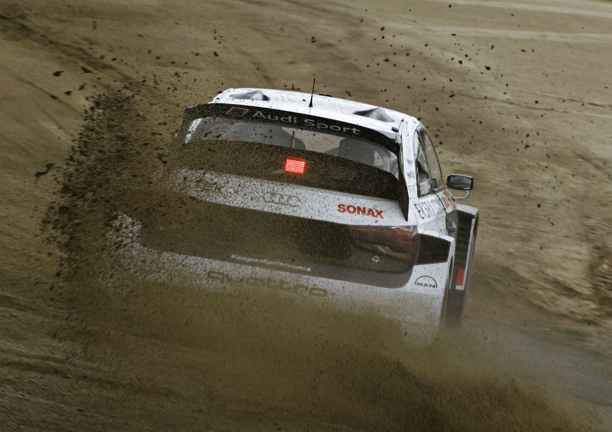
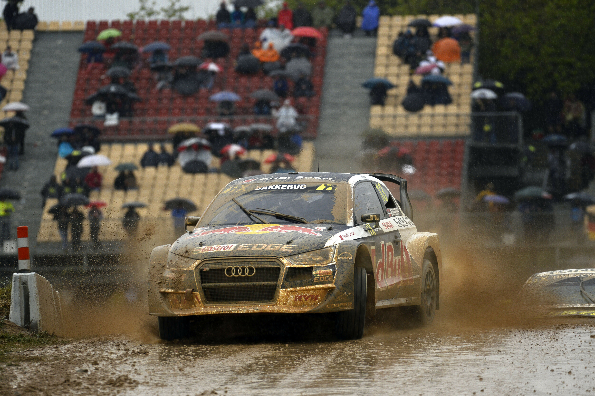

Povijest Quattro tehnologije
Quattro tehnologija promijenila je svijet automobila i postavila nove standarde za pogon na sve kotače. Audi je prvi put predstavio Quattro tehnologiju 1980. godine, revolucionirajući način na koji vozila upravljaju različitim vrstama terena. Inspiriran tehnologijom korištenom u vojnoj industriji, Quattro je brzo našao svoj put u serijsku proizvodnju, čime je Audi postao pionir u ovoj inovaciji.
Prvi model s Quattro pogonom, legendarni Audi Quattro Coupe, nije bio samo tehnološki napredan, već je postao i ikona motorsporta. Ovaj automobil dominirao je na svjetskoj rally sceni, osvajajući prvenstva i dokazujući superiornost Quattro sustava na zahtjevnim stazama. Njegova kombinacija snage, preciznosti i stabilnosti oduševila je kako profesionalce, tako i svakodnevne vozače.
Quattro tehnologija temelji se na ravnomjernoj raspodjeli snage između svih kotača, čime se postiže vrhunska trakcija i stabilnost u svim uvjetima vožnje. Bez obzira na to radi li se o snijegu, kiši, blatu ili suhom asfaltu, Quattro omogućuje vozačima da zadrže kontrolu i sigurnost. Ovaj napredni sustav s vremenom je postao sinonim za pouzdanost i inovaciju u automobilskoj industriji.
Tijekom godina, Quattro tehnologija se kontinuirano razvijala, integrirajući najnovije digitalne i mehaničke inovacije. Danas se koristi u raznim Audi modelima, od sportskih automobila poput RS serije do luksuznih SUV-ova poput Q8. Svaki model prilagođen je specifičnim potrebama vozača, zadržavajući ključne prednosti Quattro pogona – sigurnost, kontrolu i užitak u vožnji.
Povijest Quattro tehnologije nije samo priča o inovaciji, već i o stalnom pomicanju granica mogućeg. Audi nastavlja ulagati u razvoj ovog sustava, osiguravajući da Quattro ostane sinonim za vrhunsku tehnologiju pogona na sve kotače. S Quattrom, svaka vožnja postaje sigurnija, dinamičnija i nezaboravna, što je razlog zašto je ova tehnologija osvojila srca milijuna vozača diljem svijeta.